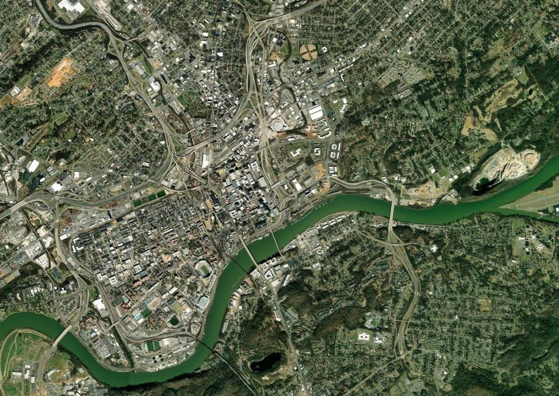

What we are organizing
Campaigns and wins
The chapter turns turnout into results. Here is what we are pushing on, where across Knoxville we do the work, and what we have already won together.
The campaigns, figures, map pins, and dates below are illustrative samples. They show how the chapter could track its goals in the open, not real current totals.
Goals we are chasing
Campaigns in motion
Real organizing has numbers attached. These trackers show what we are aiming at and how close we are, the same way a live site could update them every week.
Defend and expand KAT bus service
74%740 signaturesGoal: 1,000
Riders and neighbors signing on for frequent, affordable service that does not get cut at budget time.
Tenant clinic capacity
66%132 householdsGoal: 200 this year
Renters walked through eviction notices, repairs, and their rights at our drop-in clinics.
Grow the chapter
48%58 new membersGoal: 120 in 2026
Every new member is another door knocked, another shift covered, another vote at the General Meeting.
Little Red Schoolhouse
90%36 seats filledGoal: 40 readers
Newcomers and longtime members reading together in our political education program.
On the ground
Organizing across Knoxville
From downtown to the union halls and neighborhoods of East Knoxville, the work happens in real places. Tap a pin to see what is there.

Tap a pinSatellite imagery from Esri, used in this prototype only. The pins and locations are illustrative.
Track record
Recent wins
Organizing adds up over time. These are recent moments, newest first, that show what neighbors can do when they move together.
-
May 2026
Forty riders packed City Council
A standing-room crowd turned out to defend KAT bus service, and the proposed cut was sent back for another look.
-
Apr 2026
Tenant clinic opened a second night
Demand grew enough that the housing group added a second monthly drop-in, doubling the renters it can reach.
-
Mar 2026
Thirty households answered eviction notices
The tenant clinic helped more than thirty renters understand their rights and respond before their court dates.
-
Feb 2026
A weekend drive moved 1,200 pounds of groceries
Mutual aid volunteers collected and distributed over half a ton of food across two neighborhoods in a single weekend.
-
Nov 2025
The Little Red Schoolhouse graduated its first cohort
Dozens of new members finished a study series and stepped into working groups ready to organize.
-
2025
Members knocked 3,000+ doors across East Knoxville
A year of canvassing built the relationships and lists that every campaign since has been able to lean on.
Get in the fight
Put your hands on the next win
None of this happens without people. Pick a working group, come to a meeting, and help turn the next goal on this page into a result.